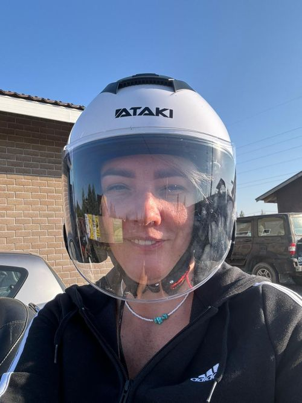
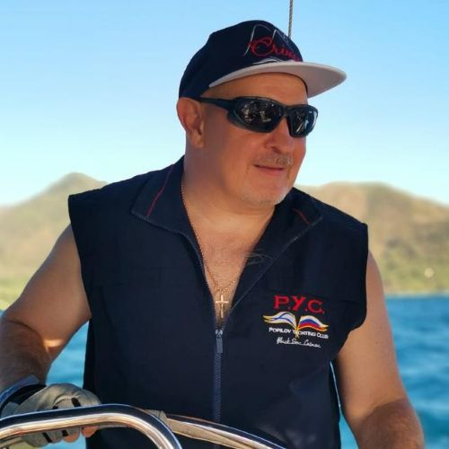

Путевые дневники
Истории из реальных переходов и жизни на борту в разных условиях.
Смотреть зарисовку →SAILING YOUTUBE CHANNEL
A channel for those who love yachts, the freedom of the horizon, and real maritime experience.
Watch on YouTubeВ определённый момент жизни понимаешь: настоящая свобода — это не отсутствие обязательств, это возможность самому выбирать свой курс. Для меня этой свободой стало море.
Этот канал — не просто красивые видео о путешествиях под парусом. Это хроника новой жизни, начатой с чистого листа, где каждый пройденный узел и каждая миля — результат осознанного выбора и борьбы за право быть собой.
Взгляд инженера на морскую практику, честный разбор навигации, управление рисками и реальный путь к собственному горизонту — без глянца и фальши.
A flexible grid for episode premieres, playlists, and special channel projects.
Истории из реальных переходов и жизни на борту в разных условиях.
Смотреть зарисовку →Практичные обзоры моделей, компоновок, оснащения и выбора.
Clear guidance for beginners and experienced skippers alike.
Куда идти, где швартоваться и как планировать запоминающиеся переходы.
Смотреть лог перехода →Яхтинг — это непрерывный ремонт и апгрейд в самых красивых местах.
Читать разбор модуля →Опыт преодоления бюрократических рифов: документы, портовые формальности и законы моря.

Яхтсмен, организатор быта и вдохновитель. Благодаря её заботе море становится домом, а каждая швартовка — уютной.

Шкипер, инженер и автор канала. Тот, кто держит штурвал, планирует риски и разбирается с технической реальностью яхтинга.